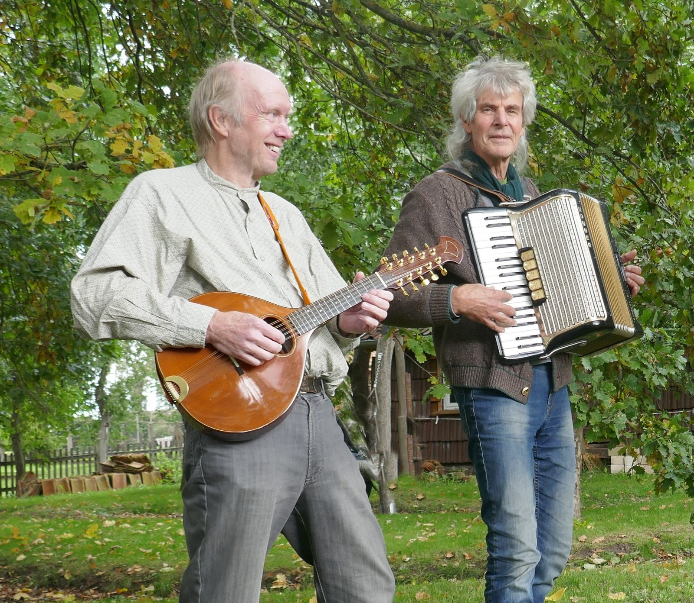
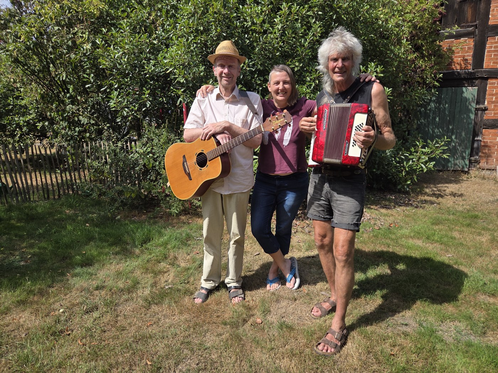
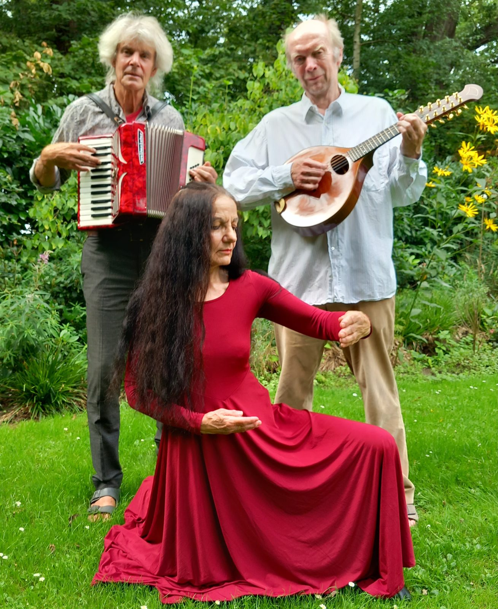
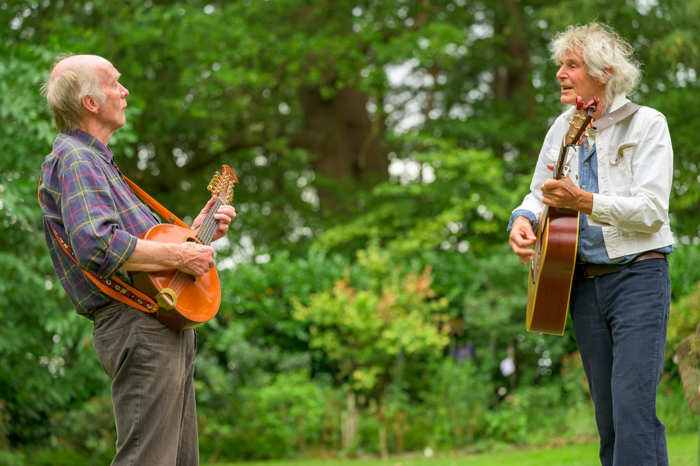

Die
Amtsbrüder
Musik für alle und alles und überall — zum Hinhören, Genießen, Nachdenken, Mit- und Mutmachen. An allen möglichen und unmöglichen Orten und Plätzen.
Die Amtsbrüder — allein, mit der Wölfin, mit Tänzerin

Die Amtsbrüder
Zwei leidenschaftliche Rentner, mehrstimmig, mit Piano, Gitarre, Mandoline, Akkordeon, Mandola und Drehleier.

Die Amtsbrüder & Die Wölfin
Christina Wolf trallert seit Kindheitstagen nicht nur in der Badewanne — sie singt mit und spielt Cajon.

Die Amtsbrüder & Tänzerin Anne Heinz
Anne Heinz vom Kunsthof Bockhorn tanzt die Performance zum Programm „Es geht eine dunkle Wolk herein“.
Seltene Perlen, handverlesen
Musik zur Anregung und Unterhaltung, zum Hinhören, Genießen, Nachdenken, Mit- und Mutmachen — an allen möglichen und unmöglichen Orten und Plätzen.
Seltene Perlen der deutschen Liedermacherinnen- und Liedermacherszene, ergänzt durch eigene Schöpfungen und Bearbeitungen: Folk, Schlager, Blues, Rock, politisch unkorrekte Lieder zur Lage — handverlesen.
- Chansons
- Folk
- Oldies
- Schlager
- Blues
- Rock
- Plattdeutsch
- Lieder zur Lage

„Die Gedanken sind frei“
Aufgenommen im August 2026 im Garten, zusammen mit Christina Wolf. Gut eine Minute.
Alles Weitere, angepinnt
Die nächsten Termine
„Unverschämte Freude am Leben“
10:00–12:00 Uhr · Stadtmitte, Lange Straße · Kulturfrühstück der Grünen
Die Amtsbrüder und die Wölfin
„Die Gedanken sind frei, aber bitte mit Sahne“
18:00 Uhr · Deelenkonzert (privat)
Die Amtsbrüder und die Wölfin
„Simplicissimus in Westfalen“
19:30 Uhr · Kleiner Bühnenboden, Schillerstraße 48
Markus von Hagen und Manni Kehr
Lesung mit Musik zum 350. Todestag von Grimmelshausen
„Alte und neue Lieder zu Krieg und Frieden“
16:00 Uhr · Domplatz · Friedensfest
Die Amtsbrüder